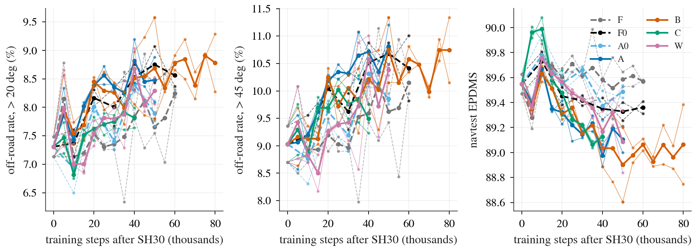

2026-10-11，实验线 VT，决策 248，接决策 145、160、204、245。数字全部来自 experiments/vis_train/results/reads.md，没有重算。区间都是 95% 区间，按日志整体重抽样，臂和对照同种子配对。W 的两个种子都已训完，W 的读数是 k50。
此前所有方法里驾驶模型的视觉编码器都是冻结的。这条线问：真的在 navtrain 上训练视觉权重，测试集上「大弯出界」这个缺口会不会变小。
判据看三个失败率，单位是百分点（pp），正数是更差。出界率（off-road）：车开出了可行驶区域。转角大于 45 度的出界再分两类。切内侧（cut-inside）：车往弯内侧切过了路沿。转不过去（under-turn）：车转得不够。全榜分数、小于 5 度的直路、前车碰撞（NC）和其余子项只当护栏。分数类指标正数是更好。「区间含 0」意思是这个差分不开。
一个臂如果靠降低别的指标买到转弯收益，就不是候选（预登记补记 2）。航向角误差不当闸门（决策 245）。
剂量够了：视觉权重的相对位移是 2.0% 到 2.6%，远过 0.5% 的线；把支路内容换成别的场景的，分数掉 4.3 到 6.9。所以不能说「训得不够」。
| 臂 | 做法 | 对照 |
|---|---|---|
| F | 冻结，只是多训步数 | 无（同步数基线） |
| A0 | 冻结，但开了一条读原视觉特征的通道 | F |
| A | 视觉编码器的一份可训练副本，输出经通道进驾驶模型 | A0 |
| B / B2 | A 加预测未来 1 秒和 2 秒视觉特征的损失；B2 再训 30k 步 | A0、A |
| C | 原有编码器原地解冻，不加锚行（保住原能力的行）、不蒸馏其他头 | F0（同样去锚但视觉冻结） |
| W | A 的支路读前、左、右三个视角（续训，k50） | A（同步数），F |
| R0 / RB / RW0 / RW | 支路冻结，驾驶模型从出厂权重按完整 SH30 配方从头训 1 万步，经通道读冻结的 token：R0 读原 Cinque 的前视 token（对照），RB 读 B 的训练过支路，RW0 读冻结出厂编码器在三个视角上的 token（没有任何训练过的视觉），RW 读 W 的训练过的三视图支路。每臂一个检查点。闸门要求「遮掉支路掉分 ≥ 0.2」才跑，实测遮掉反而涨 0.75，闸门没过；用户覆盖后照跑 | R0；另对 SH30 |
A、B、C、W、B2 与 R 的各臂都是两个种子。

「升」「降」指区间整体在 0 之上或之下，「没动」是区间含 0。对失败率，升就是更多失败。「救 N 弄坏 M」是 token 数：对照失败而本臂通过的有 N 个，反过来有 M 个，括号里是失败总数的变化。大于 45 度桶的数。
| 比较 | 升 | 降 | 没动 | 救 / 弄坏（大于 45 度） |
|---|---|---|---|---|
| A 对 A0（k50） | 中弯（20 到 45 度）的路径进度 +0.52 [+0.20, +0.85]；直路出界率 +0.17 [+0.05, +0.32] | 全榜 −0.38；直路 −0.51；前车碰撞 −0.20；碰撞时间 −0.28；舒适度 −0.74 | 大于 20 度出界 +0.59 [−0.25, +1.48]；大于 45 度切内侧 +1.09 [−0.08, +2.25]；转不过去 −0.59 [−1.19, +0.03]；navhard 全部 | 出界 救 101 弄坏 130（299 → 328）；切内侧 57 / 90（162 → 195）；转不过去 37 / 19（75 → 57） |
| B 对 A0（k50） | 直路车道保持 +0.16；中弯路径进度 +0.50；大于 20 度出界 +0.79 [+0.05, +1.55]（更差）；大于 20 度切内侧 +0.75（更差） | 全榜 −0.58；直路 −0.59；前车碰撞 −0.24；舒适度 −1.19；navhard 第一阶段（种子 1）−2.09 [−4.16, −0.15] | 大于 45 度出界 +0.89 [−0.49, +2.21]；切内侧 +0.86 [−0.26, +1.82]；转不过去 −0.40 [−0.93, +0.13] | 出界 99 / 126（299 → 326）；切内侧 62 / 88（162 → 188）；转不过去 32 / 20（75 → 63） |
| B 对 A（k50） | 分数项没有；中弯切内侧 +0.52（更差） | 全榜 −0.20 [−0.41, −0.00]；舒适度 −0.44 | 大于 45 度出界 −0.07 [−1.03, +0.84]；其余几乎全部 | 出界 83 / 81（328 → 326） |
| B2 对 A0（k80） | 路径进度各档（直路除外；全部 +0.30 [+0.12, +0.47]）；大于 20 度出界 +0.89 [+0.03, +1.77]（更差） | 全榜 −0.42；直路 −0.54；前车碰撞 −0.30；舒适度 −1.28；转不过去 −0.63 [−1.23, −0.12]（失败变少） | 大于 45 度出界 +0.89 [−0.62, +2.45]；切内侧 +1.02 [−0.07, +2.06] | 出界 107 / 134（299 → 326）；切内侧 61 / 92（162 → 193）；转不过去 40 / 21（75 → 56） |
| C 对 F0（k40） | 路径进度 +0.25；navhard 综合分两个种子 +3.17 [+0.09, +6.63]、+3.61 [+0.11, +7.18]；前车碰撞失败数 +0.32（更差） | 直路 −0.55 [−0.93, −0.17]；前车碰撞 −0.30 [−0.52, −0.09]；碰撞时间 −0.26；舒适度 −0.81 | 全榜 −0.22 [−0.59, +0.13]；大于 45 度出界 −1.02 [−2.24, +0.30]；切内侧 −1.09 [−2.22, +0.04]；转不过去 +0.30 [−0.36, +1.05]；HUGSIM 与 F0 无差 | 出界 136 / 105（319 → 288）；切内侧 101 / 68（208 → 175）；转不过去 22 / 31（49 → 58） |
| W 对 A（k50） | 碰撞时间（大于 45 度）+0.46 [+0.04, +0.92] | 路径进度 −0.19 [−0.26, −0.11]；直路路径进度 −0.30 [−0.41, −0.18] | 全榜 −0.02 [−0.25, +0.21]；大于 20 度出界 −0.19 [−1.00, +0.59]；大于 45 度出界 −0.43 [−1.86, +0.98]；切内侧 −0.69 [−1.93, +0.55]；转不过去 +0.26 [−0.33, +0.83]；navhard 综合分种子 0 −0.38 [−2.92, +2.05]、种子 1 +1.32 [−0.97, +3.64]；HUGSIM 未读 | 出界 129 / 116（328 → 315）；切内侧 95 / 74（195 → 174；种子 0 36 / 36，种子 1 59 / 38）；转不过去 20 / 28（57 → 65） |
| W 对 F（未训练），k50 | 中弯路径进度 +0.56；大于 45 度路径进度 +0.54 | 全榜 −0.50 [−0.79, −0.23]（种子 −0.19 / −0.81）；直路 −0.59；大于 45 度舒适度 −2.52 | 大于 20 度出界 +0.63 [−0.07, +1.42]；切内侧 +0.40 [−0.56, +1.54]；navhard 综合分 −0.44 [−3.52, +2.46] / +0.63 [−1.75, +3.00] | 出界 98 / 121（292 → 315）；切内侧 60 / 72（162 → 174） |
表里有一些读数区间含 0 却方向一致，比如 C 的大弯出界降 1.02 pp；这些只能算「没动」。每个比较读了很多个格子，没有差异时也有约 5% 的格子会越过 0。
A 对 A0 的全榜退步在 k10 是 −0.11，k20 −0.23，k30 −0.51；之后停在 −0.2 到 −0.5（k45 是 −0.18，区间含 0；k50 −0.38），并不是一路变大。B 对 A0 同样或略差。两个都不是候选。
测试时把支路遮掉，A 涨 0.75 分，大于 20 度出界降 1.65 pp，大于 45 度切内侧降 2.14 pp；B、B2 同方向（涨 0.84 和 0.76）。换成别的场景的内容则掉 5.45、5.66、6.94。所以模型读这条通道，读出来的东西让它切内侧。
另一方面，离线探针（一个小预测头读支路特征，看大弯出界）显示 B 的特征比冻结特征多带一点转弯信息：B −1.05 / −1.11 pp，区间不含 0；A −0.67，区间含 0；B2 −1.24 / −1.40；C −1.52 / −1.59。信息读出变好，驾驶模型用它时变差：与决策 245 是同一个形状，这是第二次看到。
预登记规定：A 的通道必须「遮掉后掉分 ≥ 0.2」才启动 R。实测 −0.75 [−1.09, −0.44]（两个种子 −0.61 和 −0.90），闸门没过，16 个任务当时取消；用户随后覆盖了闸门（补记 8），R 照跑，见第六节。闸门失败这件事保留在这里和决策 248 里。续训改选 B（大于 45 度出界对 A0：A +0.46 pp，B +0.16 pp）。B2 对 A0 全榜 −0.42 [−0.78, −0.08]；B2 对 B 全榜 +0.16 [−0.02, +0.34]：多训 30k 步，退步没有变大也没有变小。
C 在 k05 到 k10 看起来有收益（k10 全榜 +0.26，区间下界 −0.00），之后消失。k40：直路 −0.55，前车碰撞 −0.30，大弯出界和切内侧虽然方向是降，区间都含 0。navhard 综合分对 F0 两个种子都升，对 F 区间含 0（+2.18 [−0.67, +5.35]、+1.81 [−0.98, +4.94]）。HUGSIM 上 C 与 F0 没有差，但 F 和 F0 自己对 SH30 的点估计都更低（F 种子 0 −0.052 [−0.101, −0.015]，种子 1 −0.021 [−0.060, +0.009]，后者区间含 0）。因为直路和前车碰撞退步，C 不是候选。
W 对 A 的大于 45 度切内侧，seed 均值逐快照：k15 −0.79 [−1.48, −0.17]，k20 −1.15 [−1.91, −0.39]，k25 −0.76（区间含 0），k30 −1.65 [−2.80, −0.68]，k35 −1.05（含 0），k40 −0.36（含 0），k45 −1.75 [−3.03, −0.48]，k50 −0.69 [−1.93, +0.55]（含 0）。区间在 0 的两侧来回，终点含 0。k50 分种子：种子 0 +0.00 [−1.28, +1.45]，种子 1 −1.38 [−3.04, +0.15]，也都含 0（种子 1 在 k35 是 −2.50）。翻转：切内侧救 95 弄坏 74（195 → 174），转不过去救 20 弄坏 28（57 → 65）。内侧路沿在视场外 / 内：−0.93 [−2.32, +0.30] / +0.33 [−3.80, +5.98]，都含 0；原文写的「收益集中在视场外」是 k35 的读数（−1.44 [−2.81, −0.21]），终点不保持。
W 对未训练的 F：全榜 −0.50 [−0.79, −0.23]，直路 −0.59，大于 20 度出界 +0.63 [−0.07, +1.42]，切内侧 +0.40 [−0.56, +1.54]：不更好，比 k35（−0.32）更差。测试时遮掉通道，W 涨 0.72 [+0.46, +1.01]（种子 +0.51 / +0.94）；换成别的场景的内容掉 4.28。只遮掉两个侧视图：种子均值 −0.18 [−0.46, +0.10]，含 0；种子 0 −0.54 [−0.93, −0.16]，种子 1 +0.18 [−0.12, +0.50]。侧视图只在种子 0 上被读到。离线探针对冻结特征 −1.62 / −1.46 pp，区间不含 0。navhard 综合分 33.38 / 34.84，对 A、F、SH30 的每个差区间都含 0。
读法：三视图在续训下没有把切内侧稳定压到 A 之下，也没有越过未训练对照。单个快照的摆动在 1 到 2 pp，所以它是一个要在联合训练里重测的方向，不是结果。
「本车道前方静止或慢车」这一类（决策 196）：没有任何臂对其对照有区间不含零的改善（W 比 A 少一些，但区间含零，而且两者步数不同）。前车碰撞失败数：A0 161.5，A 183，B 190，C 199，W 178（k50），B2 197.5。W 对 A 的这一类率差 +0.01 [−0.09, +0.11]，含 0。
噪声底：冻结的 F 只是多训步数，对 SH30 的全榜分数在各快照之间在 −0.27 到 +0.19 之间摆；大于 45 度切内侧在 −0.16 到 +1.45 pp 之间摆。几个 0.1 分的差在噪声里；切内侧 1 pp 左右的差也在冻结对照自己的漂移范围内。
四个训练臂各两个种子，每臂一个 1 万步检查点（reads.md 里记为 k10）。读法固定：按「救 N 弄坏 M」翻转数和测试时遮掉 / 打乱通道对 R0 读，两个种子都列，不靠一个差值；单个快照在切内侧上摆 1 到 2 pp。全榜绝对分（来源：box 上 chain/R/log.txt，不在 reads.md）：R0 89.46 / 89.55，RB 88.52 / 88.46，RW0 89.44 / 89.56，RW 88.94 / 88.61（种子 0 / 1）。
读数之前写下的三条预期与结果。E1「RW0 对 R0：视场外路沿的切内侧有收益，全榜小正或持平」：全榜一半成立（−0.00 [−0.20, +0.19]），切内侧收益没有成立（视场外 −0.21 [−0.97, +0.60]，翻转 46 / 40），未训练视觉的三个原始视图对前视 token 对照是零结果。E2「RB 对 R0：小正到持平，区间很可能含 0」：错了，−1.01 [−1.36, −0.69]，两个种子同向（−0.94 / −1.09）。E3「RW 不比 RW0 好」：成立，而且更强（−0.73 [−1.05, −0.42]）。
| 登记的比较（对 R0） | 全榜（均值；种子 0 / 1） | 大于 20 度出界（正更差） | 大于 45 度切内侧 | 救 / 弄坏（切内侧 45 度；出界 45 度；出界 20 度） |
|---|---|---|---|---|
| RB − R0 | −1.01 [−1.36, −0.69]；−0.94 / −1.09 | +1.54 [+0.69, +2.42]；+1.20 / +1.87 | +1.88 [+0.93, +2.93]；+1.78 / +1.98 | 50 / 107（140 → 197）；101 / 151（284 → 334）；168 / 265（482 → 579） |
| RW0 − R0 | −0.00 [−0.20, +0.19]；−0.02 / +0.01 | +0.05 [−0.45, +0.57]；+0.10 / +0.00 | −0.20 [−0.84, +0.45]；−0.46 / +0.07 | 46 / 40（140 → 134）；81 / 70（284 → 273）；141 / 144（482 → 485） |
| RW − R0 | −0.73 [−1.05, −0.44]；−0.52 / −0.94 | +0.68 [+0.00, +1.44]；+0.54 / +0.82 | +0.66 [−0.25, +1.70]；+1.25 / +0.07 | 54 / 74（140 → 160）；102 / 125（284 → 307）；176 / 219（482 → 525） |
| RW − RW0 | −0.73 [−1.05, −0.42]；−0.50 / −0.95 | +0.63 [−0.09, +1.39]；+0.44 / +0.82 | +0.86 [+0.08, +1.68]；+1.71 / +0.00 | 52 / 78（134 → 160）；92 / 126（273 → 307）；174 / 214（485 → 525） |
表 R1。括号里是对照 → 本臂的失败 token 数。RB 对 R0 在所有翻转行里弄坏的都比救的多得多；RW0 对 R0 的救与弄坏基本相抵。对 SH30（reads.md 把这几行标为参照，不是登记比较；补记 8 要求报告）：R0 对 SH30 全榜 −0.05 [−0.25, +0.15]，大于 20 度出界 +0.33 [−0.21, +0.98]（参照行，不下判词）；RB 对 SH30 −1.06 [−1.48, −0.67]，出界 +1.87 [+0.73, +3.08]，切内侧 +2.21 [+1.09, +3.42]；RW0 对 SH30 −0.05 [−0.25, +0.14]，出界 +0.38 [−0.10, +0.89]，切内侧 +0.13 [−0.50, +0.74]；RW 对 SH30 −0.78 [−1.13, −0.45]，出界 +1.01 [+0.19, +1.88]，切内侧 +0.99 [+0.14, +1.95]。
| 臂 | 遮掉通道（全榜，选项减该臂） | 打乱通道 | 遮掉后的分数（种子 0 / 1） |
|---|---|---|---|
| R0 | −0.30 [−0.54, −0.05]（−0.28 / −0.31） | −1.07 [−1.38, −0.78] | 89.17 / 89.24 |
| RB | +0.65 [+0.21, +1.10]（+0.58 / +0.71）；大于 20 度出界 −1.60，大于 45 度切内侧 −2.74 [−4.09, −1.52] | −9.67 [−10.82, −8.59] | 89.10 / 89.18 |
| RW0 | −0.12 [−0.29, +0.06]（−0.05 / −0.19） | −0.71 [−0.96, −0.49] | 89.39 / 89.37 |
| RW | +0.43 [+0.06, +0.81]（+0.25 / +0.60）；切内侧 −1.25 [−2.33, −0.29] | −7.42 [−8.40, −6.51] | 89.19 / 89.21 |
表 R2。RB 与 RW 把通道读得很重，遮掉后回到 R0 遮掉后的水平（89.17 / 89.24），比 R0 不遮的 89.46 / 89.55 低约 0.3 到 0.4。RW0 的通道读得轻，和 R0 同量级。
| 大于 45 度切内侧，按内侧路沿是否在前视视野内 | 路沿在视场外（1178 个 token） | 路沿在视场内（150 个） |
|---|---|---|
| RW − R0 | 5.18% 对 4.29%，+0.89 [−0.09, +1.98] | 9.00% 对 11.00%，−2.00 [−5.59, +1.24] |
| RW0 − R0 | 4.07% 对 4.29%，−0.21 [−0.97, +0.60] | 9.67% 对 11.00%，−1.33 [−4.20, +1.00] |
| RW − RW0 | 5.18% 对 4.07%，+1.10 [+0.17, +2.06] | 9.00% 对 9.67%，−0.67 [−3.82, +2.08] |
表 R3。视场内只有 150 个 token，区间太宽，什么也说不了。视场外：训练过的三视图（RW）比未训练的三视图（RW0）切内侧更多，未训练三视图对前视对照没有收益。
登记判词（补记 7 的线，字面套用，主量是大于 20 度出界）：RB − R0 +1.54 [+0.69, +2.42]，undetermined；RW − R0 +0.68 [+0.00, +1.44]，undetermined；RW − RW0 +0.63 [−0.09, +1.39]，undetermined；这三个的护栏都 fail，都不是候选。RW0 − R0 +0.05 [−0.45, +0.57]：reads.md 打印 pending（对没有训练过视觉的 bank，位移与探针是 n/a），字面套用是「没测到」（来源位移 0 小于 0.5%，遮掉的掉分 0.12 小于 0.2），这是形式结果，量本身并不在「在收」附近；护栏通过，但没有「在收」，也不是候选。对 SH30 的三行我按线字面套用，也都是 undetermined（RW0 对 SH30 差 0.38，不满足「平」的小于 0.3）。两个种子在主量上没有反向。navhard 综合分：R0 33.83 / 33.29，RB 33.95 / 33.40，RW0 32.97 / 33.01，RW 33.60 / 33.40；对 R0 的差区间都含 0，R 臂之间的差在 1 分之内，唯一的下行格是 RW 种子 1 的第一阶段对 R0 −3.55 [−6.11, −1.06]。
读数直接给出的结论。(1) 读 B 的训练过支路的 policy 比读冻结 token 的差 1.01 分，切内侧多 1.88 pp；它读得重，遮掉后回到 R0 遮掉后的水平。所以续训里「遮掉通道涨分」不是因为通道没被读：从头训出来的 policy 读它更重，结果更差。(2) 三个未训练的视图是零结果。(3) 训练过的三视图支路对未训练的三视图差 0.73，对 R0 也是 0.73。(4) 没有一个 R 臂降低大于 45 度切内侧；RB 与 RW 都升高。与续训比：方向一致，续训里 A − A0 −0.38，B − A0 −0.58，R 里对应的 RW − RW0 −0.73，RB − R0 −1.01，R 的差更大，不是同量级；遮掉通道的涨分 R 里 +0.65（RB）、+0.43（RW），续训里 +0.84（B）、+0.75（A）。这不是同一对比较（对照、步数、起点都不同），只说方向。
推测（未检验）。训练过的支路 token 带的转弯信息（探针里 B 比冻结多 1.05 pp，W 多 1.46 到 1.62 pp）在训练集上对 policy 有用，在测试集上被用成切内侧。验证办法：联合训练里加大通道的丢弃比例，或在 navtrain 的留出集上读同一通道。
| 比较 | 量 | 判词 | 护栏 |
|---|---|---|---|
| A 对 A0（k50） | 大于 20 度出界 +0.59 [−0.25, +1.48] | not measured | fail |
| B 对 A0（k50） | +0.79 [+0.05, +1.55] | undetermined | fail |
| C 对 F0（k40） | −0.71 [−1.62, +0.18] | undetermined | fail |
| B2 对 A0（k80） | +0.89 [+0.03, +1.77] | undetermined | fail |
| W 对 A（切内侧，k50） | 均值 −0.69 [−1.93, +0.55]；种子 0 +0.00 [−1.28, +1.45]；种子 1 −1.38 [−3.04, +0.15] | 三个都是 undetermined（原文种子 1 在 k35 的 seeing the curb helps 不再成立） | 均值与种子 0 通过，种子 1 不过；无退步规则有两个下行格，不是候选 |
A 的「not measured」是规则按字面算出来的：规则里「遮掉通道掉分 < 0.2」被「遮掉反而涨 0.75」触发。这不表示训得不够，上面已经说明剂量到了、通道被读了。
VTR-A 整臂取消。pp_train.py、vt.py）没有经协调者逐行复核；续训重启了优化器；W 在相同步数上比较（k50）。侧视图和任何表征改动，应该放进一次联合的驾驶模型训练里重测：1 万步、两个种子、逐项去掉，用「救 N 弄坏 M」的翻转数来读。
图与文件：experiments/vis_train/results/trend.png（本页 figs/trend.png 为其副本）、experiments/vis_train/results/reads.md、决策 research/decisions/248.md、预登记 experiments/vis_train/plans/2026-10-10-vis-train-prereg.md。